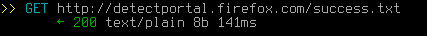
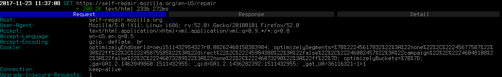
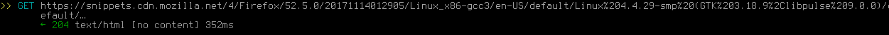

Mozilla Firefox es uno de los navegadores web más populares y perdurables. Sus desarrolladores han adquirido cierta reputación por desarrollar un "navegador que respeta la privacidad y seguridad del usuario" - pero, ¿es algo justificado o sólo una estrategia de marketing? Bueno, de hecho, a través de sus años de existencia, los desarrolladores han tomado varias decisiones que podrían ser consideradas anti-privacidad (y anti-usuario en general), pero en este artículo nos estaremos enfocando exclusivamente en aquellas que pueden ser consideradas spyware. Versión testeada: 52.5.0, con la configuración por defecto. Programas usados para buscar solicitudes web: Mitmproxy.
Después de seguir la guía de mitigación, este programa No Es Spyware.
Este navegador envía bastante información de forma frecuente (mucha de la cual podría ser utilizada para identificarte de forma única). Todos los "servicios" que provee, como los buscadores que vienen por defecto y Pocket, son anti-privacidad. La clasificación puesta no es más alta porque al menos puedes desactivar or modificar la mayoría de estas características, aunque esto requiera lidiar bastante con about:config
En el momento en el que inicias Firefox, el navegador hace esta solicitud:

De hecho, hace esta solicitud cada vez que visitas un sitio web, e incluso puede que unas cuantas veces seguidas en un solo sitio web. Se podría decir que Firefox hace "llamadas a casa" la mayoría del tiempo, sin tu consentimiento, Esto sólo se puede deshabilitar usando about:config. Sin embargo, como ya has abierto el navegador, éste hará esta solicitud al menos una vez.
Los sitios web que visitas frecuentemente son añadidos al panel de Nuevas Pestañas. Y cuando abres una nueva pestaña, en ocasiones Firefox hace solicitudes a los sitios contenidos en el panel, incluyendo algunos de sus rastreadores. No se ha determinado cómo funciona del todo esto aún. Algunas veces no hace estas solicitudes; y otras veces podrías acabar con solicitudes a cientos de imágenes, scripts, rastreadores, etcétera, todos estos cargados únicamente porque abriste una pestaña nueva (sin haber visitado algún sitio web explícitamente). NO se encontró una forma de deshabilitar esto, ni siquiera usando about:config
Firefox está integrado con la plataforma de spyware "Google Analytics"[1]. También se ha confirmado que Firefox envía análisis a Google. De acuerdo con un desarrollador, el spyware en Firefox es "extremadamente útil para nosotros, y ya hemos sopesado el costo/beneficio de usar métodos de rastreo". Firefox no va a remover Google Analytics enteramente, y su posición con respecto a la privacidad es muy clara en esta cita:
"Quería hablar de la posición de los usuarios: No damos datos "directamente a Google". Vean la discusión aquí: https://bugzilla.mozilla.org/show_bug.cgi?id=858839. La versión corta es: tl:dr: Ahora tenemos la opción de optar por que Google no haga nada con los datos que Google Analytics recopila en los sitios web de Mozilla. El rastreo de GA es anónimo y sólo lo usamos para mejorar la experiencia en nuestro sitios web. Estamos recopilando datos agregados no identificables en números para asegurar que nuestro desarrollo y cambios se logren correctamente. Podemos respetar la privacidad y utilizar servicios analíticos al mismo tiempo; de hecho, la intención de Mozilla es crear una experiencia que respeta la privacidad y la usabilidad (quiero decir, Apple quiere desarrollar una experiencia de usuario que también encaje en ese molde). Necesitamos datos, anonimizados para lograr esto.
Una mejor forma de entender esto es que Mozilla quiere pretender que incluir spyware en su navegador, por alguna razón, no es una brecha de privacidad, y que Firefox puede respetar la privacidad de los usuarios mientras recoge datos sobre ellos de forma simultánea para después enviar esos datos a Google. Se sugiere leer el hilo de github y los posteriores comentarios anti-privacidad que este empleado de Mozilla hizo para defender estas características de espionaje en Firefox. Es bastante peligroso afirmar que de alguna manera hay un intermedio entre respetar la privacidad del usuario y minar sus datos.
Supuestamente esta característica te protege de sitios de "phishing", pero la verdad es que son sólo varias solicitudes a Google cada 30 minutos (de acuerdo con lo que ha dicho Mozilla), esta característica incluye solicitudes tipo POST que envían tu versión de Firefox y una cookie única, oculta y persistente. Si la URL de un sitio web coincide con una lista negra de URLs en la cache local, se hace una petición a los servidores de Google para verificar si ese sitio web está en su lista negra maestra. Esto permite a Google monitorear sitios web específicos que el usuario visita de manera transparente, colocando URLs de interés en la lista negra local pero no en la de Google.
En palabras de Mozilla: "Por ejemplo, el Reporte de Salud de Firefox envía datos a Mozilla como: sistema operativo, PC/Mac, cantidad de procesadores, versión de Firefox y cantidad y tipo de add-ons. Estos datos recopilados son atados a una ID que corresponde a cada instalación de Firefox (explicada en la pregunta #4), así que estos datos pueden ser correlacionados por algún tiempo."[2] Además, de acuerdo a Mozilla, las versiones nuevas de Firefox recopilarán datos de telemetría por defecto. Esto puede ser deshabilitado usando el menú de preferencias
Las versiones más antiguas de Firefox tenían a Google como su buscador predeterminado, el cual es obviamente anti-privacidad. Además, según su Política de Privacidad: "Cuando utilizas nuestros servicios o visualizas contenido que Google provee, recopilamos automáticamente cierta información en los registros de nuestros servidores. Esa información incluye: detalles sobre cómo usas el servicio, como tus términos de búsqueda.". Posteriormente, cambiaron a Yahoo, que no fue precisamente mejor: "La Herramienta de Historial de Yahoo te permite ver términos que has buscado anteriormente.". Lo cual significa que recopilaba todas tus búsquedas, y eliminarlas no cambiará nada: "Incluso si borras tu historial de búsquedas o desactivas la Herramienta de Historial, Yahoo aún recopilará y guardará registros de búsqueda de los usuarios cuando utilizas tecnologías de Yahoo.". Firefox 57 vuelve a traer Google como buscador predeterminado nuevamente. Si realmente les importara la privacidad, el buscador que viene por defecto sería por ejemplo, StartPage (éste da los mismos resultados que Google, pero anónimamente) o DuckDuckGo. Esto puede ser modificado usando el menú de preferencias
Firefox tiene un botón de Pocket en su barra de navegación, el cual te permite "guardar cualquier artículo, video o página desde Firefox" y "Verlos en Pocket en cualquier dispositivo, en cualquier momento". Así que veamos como luce esto en términos de privacidad - citando la Política de privacidad de Pocket [3]: "En adición a la información que nos provees cuando registras una cuenta de usuario, también recopilamos información sobre las URLs, títulos y contenido de los sitios web y otra información que guardas en Pocket". Así que todo lo que convenientemente colocas en Pocket está siendo recopilado (evidentemente, de otra forma Pocket no funcionaría). "El tipo de información que recopilamos incluye tu tipo de navegador, tipo de dispositivo, ID del dispositivo, zona horaria, idioma, y otra información relacionada a la forma en la que accedes a las Tecnologías de Pocket.". Así que en cualquier momento en el que visualizas un archivo en Pocket, ellos saben todo sobre el dispositivo que estás utilizando. "También podemos utilizar "etiquetas de pixeles", "faros web", "GIFs vacíos" y técnicas similares (individualmente o colectivamente "etiquetas de pixeles") junto con los correos electrónicos que enviamos a nuestros usuarios para recopilar datos de uso." Así que prácticamente están actuando como un sitio web antiguo con rastreadores, incluso cuando hacen algo que no tiene nada que ver con su funcionalidad. "También podemos compartir la ID de tu dispositivo con terceros que se relacionen con campañas de publicidad" ¡Así que también trabajan con anunciantes! Describir todas las violaciones a la privacidad por parte de Pocket tomaría todo este artículo. Hay servicios similares con mejores prácticas de privacidad, pero al final, todos ellos recopilan datos que ves en "la nube". Un navegador que realmente respete tu privacidad no debería estar integrado con esos servicios por defecto.
Esto puede ser deshabilitado en about:config[8]No es algo tan malo como lo anteriormente mencionado, teóricamente - pero aún así se instala algo sin tu consentimiento, con posibles nuevas pesadillas para la privacidad. No hay excusa para no hacer al menos una opción "Comprobar actualizaciones, pero preguntarme antes de instalarlas" por defecto - sería incluso mejor para el beneficio de la seguridad, sin arrebatar el control al usuario. Esto puede ser deshabilitado en el menú de preferencias
En ocasiones Firefox hace una solicitud a "self-repair.mozilla.org", la cual luce así:

La solicitud incluye un parámetro llamado "optimizeEndUserID", lo cual podría significar que
te identifica de forma única Esto SÓLO puede ser deshabilitado en about:config[7]
También se hace esta solicitud cada vez que abres la página de inicio por defecto:

El número después de la versión de Firefox es, nuevamente, identificable de forma única[4]Esto SÓLO puede ser deshabilitado en about:config
Firefox envía información a Mozilla sobre casi cualquier operación básica que hagas. Esa información es atada a una ID única de cliente, una ID para tu sesión y otra información relevante relacionada a tus acciones. Por defecto, las siguientes acciones del usuario en la interfaz, serán reportadas a Mozilla[5]:
Esencialmente, aunque esta característica no envía tu historial a Mozilla, sí le provee con información muy detallada y exacta sobre cómo el usuario usa la interfaz de Firefox. Esto puede ser deshabilitado a través de la interfaz de Firefox como se describe aquí: Share data with Mozilla to help improve Firefox [web.archive.org] [archive.fo]
Esta revisión está acompañada de una página sobre cómo configurar Firefox para hacerlo más amigable para la privacidad, y también hay enlaces a otros proyectos que han sido creados para resolver este problema. Puedes leer acerca de eso aquí. Estas son algunas de las preferencias en about:config mencionadas antes en el artículo, y sus valores deben ser establecidos a:
| Característica espía | preferencia en about:config | valor en about:config | Fuente |
|---|---|---|---|
| Llamadas a casa | network.captive-portal-service.enabled | False | Turn off captive portal [archive.is] |
| Autoreparación | browser.selfsupport.url | "" | How can I stop firefox from constantly connecting to self-repair.mozillia.org [archive.is] |
| pocket.enabled | False | Disable Pocket in Firefox [archive.is] |
firefox "about:config" settings
[web.archive.org]
[archive.is]
Este artículo fue escrito originalmente por digdeeper.neocities.org
Algunos cambios de formato y secciones fueron escritos por el mantenedor del sitio.
Otros colaboradores anónimos han añadido secciones y varios cambios a este artículo, también.
El artículo fue traducido al español por un colaborador anónimo.
1.
Google Analytics is used to track users
[web.archive.org]
[archive.li]
[via.hypothes.is]
This is a translation of the original article, it may become outdated.
Esta es una traducción del artículo original en inglés, puede quedar desactualizada eventualmente.
This article was last edited on 1/13/2019
This article was created on 11/23/2017
If you want to edit this article, or contribute your own article(s), visit us at the git repo on Codeberg. All contributions must be licensed under the CC0 license to be accepted.
2.
FAQ for FHR
[web.archive.org]
[archive.li]
3.
Política de Privacidad de Pocket
[web.archive.org]
[archive.is]
4.
Snippets Service Data Collection
[web.archive.org]
[archive.li]
5.
Metrics we collect
[web.archive.org]
[archive.li]
6.
Turn off captive portal
[archive.is]
7.
How can I stop firefox from constantly connecting to self-repair.mozillia.org
[archive.is]
8.
Disable Pocket in Firefox
[archive.is]